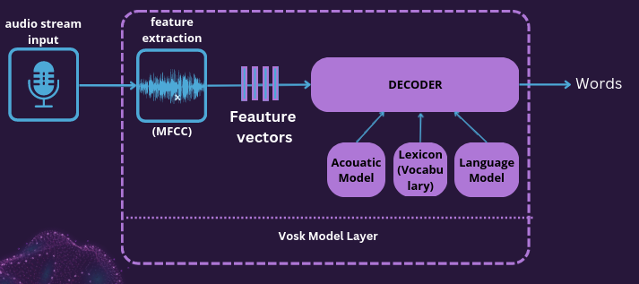
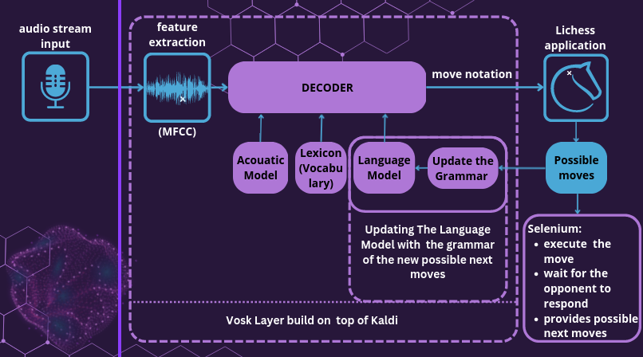

Play Chess With ASR
Table of Contents
Introduction:
- Online chess has experienced a surge in popularity in recent years due to a combination of factors such the growth of online gaming communities, and the increase in online chess platforms. This has led to an increase in the number of players, as well as a rise in the level of competition, making online chess a highly entertaining and challenging experience for all involved.
- This project represents an MVP step in the development of a desktop/mobile application that will implement various machine learning solutions and features for the game of chess. One of these features will be an ASR model allowing users to dictate their `moves` instead of writing them down with the keyboard or using the mouse.
- Having the proposed as a feature would be awesome for many reasons (comfort, accessibility, playing blindfold, learning coordinates…)
Overview:
- I have implemented speech-to-text technology using Vosk, an offline open source speech recognition toolkit build on top of Kaldi, allowing users to make moves on the chessboard by simply speaking.
- The speech is converted into text, which is then processed and translated into the corresponding move on the chessboard.
- Selenium was used to automate the process of accessing Lichess and the Lichess API was utilized to interact with the chessboard.
Timeline of Project Progression:
Planning and Research: ( ~ 4 week)
- I started with the Simple Audio Recognition: Recognizing Keywords tutorial to involve myself in ASR. It was challenging to acquaint myself with the various basic components of ASR, such as preprocessing audio files in the WAV format, converting to spectrograms, training and evaluating ASR models.
The Vosk ASR toolkit
- Choosing an ASR toolkit was a crucial task. There are several potential choices of open-source toolkits available for building a recognition system, including Sphinx-4 (written in Java) and the RWTH (written in C++). I spent a few weeks studying a solution to my problem and eventually came across Kaldi, an ASR toolkit. While it was the best tool available at the time, it was challenging to comprehend, train models, and build client applications. However, after more research, I discovered Vosk, which simplifies the use of Kaldi and includes a pre-trained small english model that could solve my problem. You can use it with different platforms and programming languages.
- A Diagram of the Kaldi model used in vosk

- The sounds produced are digitized by the microphone and transmitted to our ASR model.
- Feature extraction: In the feature extraction step of a speech recognition system, the goal is to extract a set of features from the raw audio signal that capture important characteristics of the speech signal. These features are designed to be representative of the acoustic properties of the speech signal and are typically derived from the spectral characteristics of the signal. There are many different ways to extract features from a speech signal. Kaldi uses the Mel-Frequency Cepstral Coefficients (MFCCs): They are a common choice for speech recognition systems, as they are robust to variations in pitch and speaker characteristics. MFCCs are derived from the power spectrum of the signal, and capture the spectral envelope of the signal in a compact form.
- The recognition engine analyzes this sequence of acoustic vectors by comparing it with those in its memory [Acouastic model + lexicon(Pronunciation model) + language model] and produces the most likely text sequence.
- Worth Noticing: This explanation provides a simplified overview of how the model operates. However, it's worth noting that there are many intricate details involved in connecting the models with a decision tree and in representing the phonemes. Despite this, the simplified version presented can still be useful in grasping the general process.
- Vosk: Updating the language model
- Vosk allow adjusting the probability of the words to improve the recognition. For that We have to recompile the language model from a text.
- For our chess domain-oriented project, Obtaining a text containing spoken chess moves wasn't hard. While it could be auto-generated, I had that done during a step on which I was learning Kaldi:
- pgnmentor is home to the best collection of PGN files, which are free to access and contain over a million Grandmaster games.
- Preprocessing these files to obtain the desired information was an enjoyable task that I accomplished using AWK, bash scripting, and Python. You can view this work on my GitHub blog page at [insert link].
- vosk: Updating recognizer vocabulary in runtime
- Vosk allows the model to update its vocabulary during runtime. You can define the list of possible words or phrases as a JSON list.
Here's a python code snippet example:
recognizer.SetGrammar('["one zero one two three oh", "[unk]"]')- This will improve the speed and accuracy of the model's speech recognition, and it will return an unknown token [unk] if the user says something outside the specified vocabulary.
- We will see later in a later section how this option is handy.
Development, Testing and Improving :(~ 2 weeks)
- At that point, I had an ASR model that was "fine-tuned" for chess.
- The next step was to integrate the model into a "platform" as the intermediary between the microphone and the chessboard environment [a lichess online game].
- Developing such a back-end with Python required several useful libraries to handle the various architecture components:
- microphone: python-sounddevise: This Python module provides bindings for the PortAudio library and a few convenience functions to play and record NumPy arrays containing audio signals.
- python-chess: A chess library for Python, with move generation, move validation, and support for common formats. It was used to determine the possible moves for a particular chess posision.
- Selenium browser driver: I utilized a Selenium ChromeDriver to automate the procedure of accessing our online chess game on Lichess and interacting with the chessboard. Note: Although Selenium is not specifically designed for such a purpose, as I mentioned before, this project is an MVP step.
- Lichess API: I utilized the Lichess API to retrieve information about the chessboard and update the Dynamic language model during runtime.
- After extensive adjustment, configuration, and testing of the code, I achieved a favorable outcome, and I could play chess on Lichess while simultaneously listening to music and making moves using my voice. It was a delightful experience!
Architecture:
- A diagram of the architecture is included below:

- Since the environment depicted in the diagram is dynamic, the most effective approach to gaining a comprehensive understanding of it, is to algorithmically represent its procedural form, along with additional elaboration for each step as follows:
- Initialization of necessary components
- Repeat while TRUE:
- Wait until it's our turn to play, then update our model grammar with the possible moves to recognize.
- Get/process an audio speech.
- If TEXT corresponds to a legal move:
- Execute the move.
1. Initialization
We first import our necessary libraries: sounddevice, vosk, selenium…ect:
import sounddevice as sd from vosk import Model, KaldiRecognizer import selenium ...
An important concept to highlight here is the audio sample rate. It refers to the number of audio samples captured per second, typically measured in Hertz (Hz). To process the audio properly, our model recognizer needs to know this value in advance:
device_info = sd.query_devices(sd.default.device[0], 'input') samplerate = int(device_info['default_samplerate']) model = Model("Model/Path") recognizer = KaldiRecognizer(model, samplerate)
2. Repeat while TRUE:
This "While True" creates an infinite loop with a callback function that places the audio data in a queue (check the code in the GitHub page):
def recordCallback(indata, frames, time, status): if status: print(status, file=sys.stderr) q.put(bytes(indata)) ... ... while True: data = q.get() ... ...
1. Wait for our turn | Update the model grammar
- The First part is easily accomplished by setting up a `selenium Listener` function that listens to an HTML element that indicates whether it is our turn to play.
Next, we use the Lichess API to obtain the fen of the current position, which is then processed by the chess-python library to obtain the legal moves and update our recognizer grammar (as previously mentioned):
grammar = get_grammar() recognizer.SetGrammar(grammar)
2. Get an audio speech and extract its TEXT.
Our model engine takes care of processing the audio data and extract the text from it:
recognizer.AcceptWaveform(data) recognizerResult = recognizer.Result() TEXT = json.loads(recognizerResult)['text']
3. If TEXT corresponds to a legal move:
- Since we are streaming the audio, I am using the following criteria to identify a chess move from the captured chunk:
- The presence of an "unk" word indicates a word outside the grammar.
- The minimum grammar required for a chess move is two components: {an alphabet} {a digit}; for a pawn moving forward.
- Ensure that the TEXT string value is present in our legalmoves list.
if "unk" not in TEXT and len(TEXT.split()) >= 2 and TEXT in Legalmoves:
- 1. Execute the move
Fortunately, Lichess allows us to play chess moves using keyboard commands. We can control the input field with the send_keys method in Selenium.
Keyboard = driver.find_element(By.CSS_SELECTOR, "#main-wrap > main > div.round__app.variant-standard > div.keyboard-move > input") # Keyboard.clear() Keyboard.send_keys(TEXT)
Ethical Implications:
- (Privacy): audio processing is done on the client side so there's no relevance in the terms of the user's privacy.
- (Fair Use): The solution utilizes the Lichess API and requires users to have a Lichess account. It is important to ensure that the solution is used in accordance with Lichess terms of service and that users are not using the solution to cheat or gain an unfair advantage.
Final words and Next Steps of the Project:
- This project is a step towards creating a comprehensive desktop/mobile chess application utilizing advanced machine learning solutions and features.
- In this project, I succeeded in scoring efficient Accuracy and Time Inference results, making Vosk my choice to move forward for voice-command chess moves.